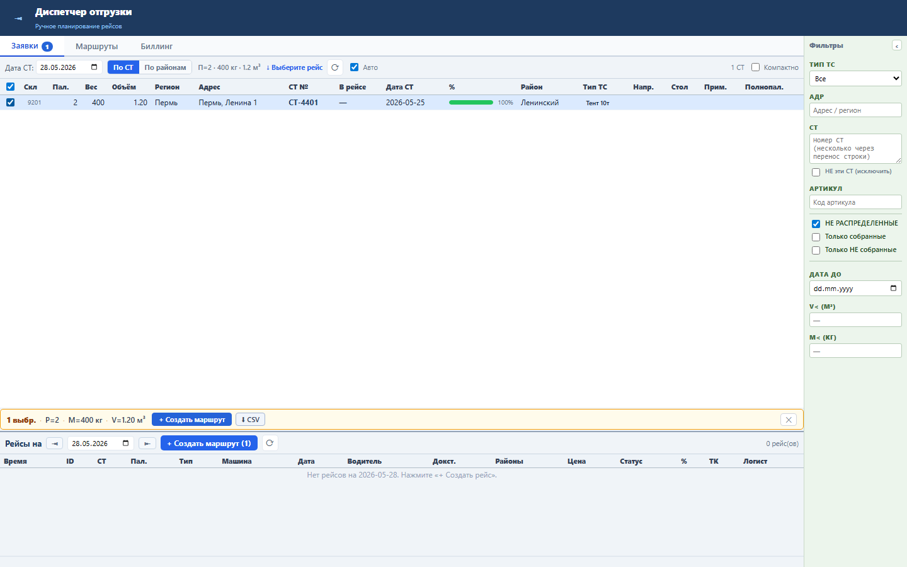
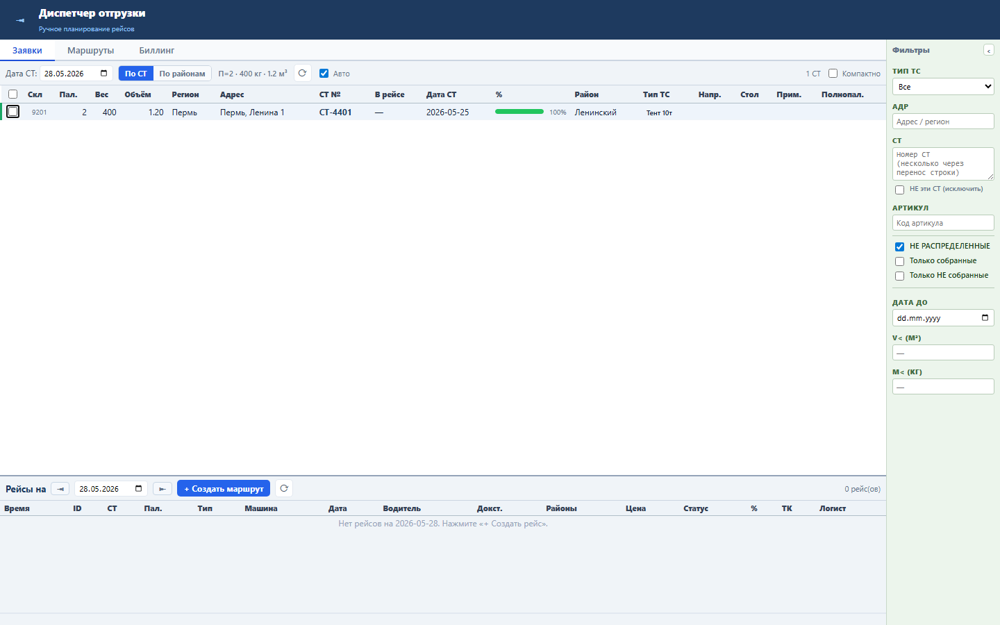
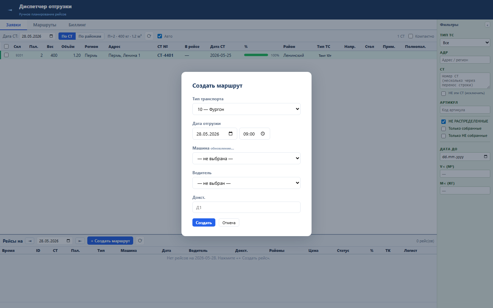
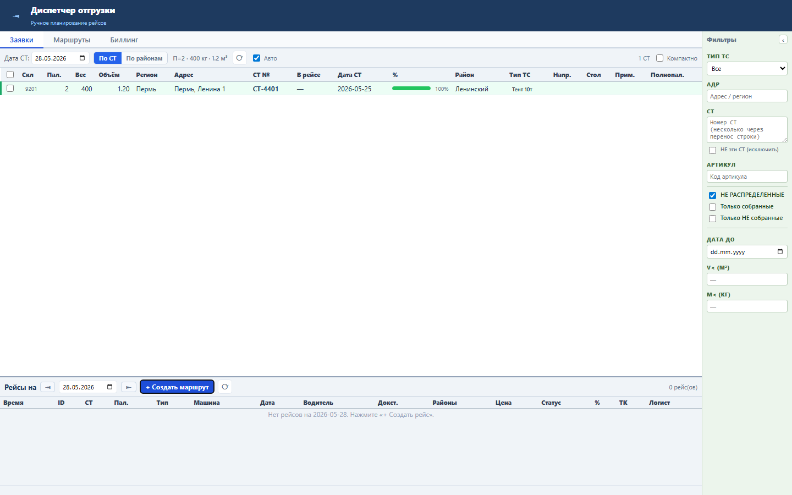

Блок делает экран диспетчера предсказуемым: Escape закрывает текущий верхнеуровневый контекст или снимает выделение.
Handler смотрит состояние диалогов, режима редактирования и наборов выделенных СТ. Приоритет: диалог создания, диалог кластера, edit mode, выделение свободных СТ, выделение СТ рейса.
Один Escape выполняет одно действие с понятным приоритетом. Это снижает риск случайных массовых действий при оставшемся выделении.




Проверка: functional, UI smoke и load gate пройдены.